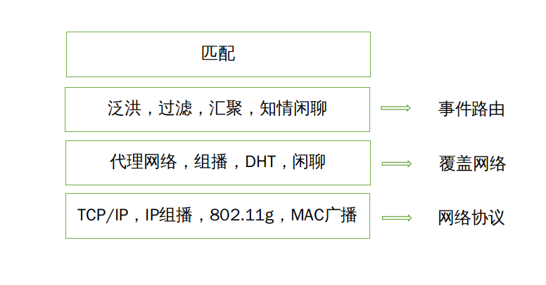

分布式系统学习摘要
分布式系统的几个显著特点
- 并发执行
- 无全局的时钟
- 故障的独立性-无法辨别机器故障还是网络故障，也就得保障故障时的依旧可运行
超级复杂的分布式系统
- Web搜索
- 一个底层的物理设施
- 一个分布式的文件系统
- 一个相关的结构化分布式存储系统
- 一个锁系统
- 一个编程模式
- 大型在线游戏（MMOG）
- 客户-服务器模型（负载分区和用户分区） EVE游戏
- 完全对等的技术？研究中 => 长久运行（永不宕机）的游戏服务基础设施
- 金融交易
- 基于事件的分布式系统
- 异构性问题的适配器。复杂事件处理(CEP)
趋势
- 出现了泛在联网技术
- 出现了无处不在计算，支持用户移动性的意愿
- 对多媒体设备的需求增加
- 把分布式系统作为一个基础设施 （云计算，云存储等）
挑战
- 异构性（网络，计算机硬件，操作系统，编程语言，软件实现等），通过中间件实现
- 开放性
- 发布系统的关键接口是开发系统的特征
- 开发的分布式系统是基于一致的通信机制和发布接口访问共享资源
- 能够使用异构的硬件和软件构建
- 安全性。有两大安全：DDOS, 移动代码的安全性(远程代码的本地执行)
- 机密性
- 完整性
- 可用性
- 可伸缩性 —— 理想状态下，系统规模变化时候，系统和应用程序应该不需要随之改变
- 控制物理资源的开销
- 控制性能损失
- 防止软件资源耗尽
- 避免性能瓶颈
- 故障处理
- 检测故障
- 掩盖故障
- 容错
- 故障恢复
- 冗余 —— 以便解决容错
- 并发性
- 透明性 —— 对外屏蔽分布式系统的分离性，被认为是一个整体
- 访问透明性
- 位置透明性
- 并发透明性
- 复制透明性
- 故障透明性
- 移动透明性
- 性能透明性
- 伸缩透明性
- 服务质量 —— 可靠，安全，性能
分布式体系结构
体系结构元素
- 通信实体：
- 对象
- 组件
- Web服务
- 通信范型：
- 进程间通信
- 消息传递
- 套接字
- 多播
- 远程调用
- 请求-应答模型
- 远程过程调用-RPC
- 远程方法调用-RMI（一般跟分布式对象一起组合使用）
- 间接通信
- 组通信（一对多的通信范型）
- 发布-订阅系统
- 消息队列（生产者和消费者模型的中介方式）
- 元组空间（生成通信，提供一个持久的元组空间）
- 分布式共享内存（DSM）
- 进程间通信
- 角色和责任
- 客户 —— 服务器
- 对等体系结构
体系结构模式
- 分层体系结构（Layering architecture）
- 层次化体系结构（tiered architecture）
- 瘦客户相关的概念（包括虚拟网络计算的特定机制）
基础模型
- 交互模型
- 通信信道的性能：延迟(latency), 带宽(bandwidth), 抖动(jitter, 多与流媒体相关)
- 计算机时钟和时序事件：时钟漂移率(clock drift rate)
- 交互模型的两个变体
- 同步分布式系统：进程执行的每一步的时间都有一个上限和下限，通过通道传递的每一个消息在一个已知的范围内接收到，每个进程有一个本地时钟，与实际事件的漂移率在一个已知的范围
- 异步分布式系统：进程执行速度不受限制，消息传递延迟不受限制，时钟漂移率不受限制
- 事件排序（Pepperland协定）—— 逻辑时间
- 故障模型
- 遗漏故障 —— 良性故障：进程或者通信通道不能完成它应该做的动作。进程遗漏故障主要是崩溃。通信遗漏故障（发送,通道,接收遗漏故障）
- 随机故障（拜占庭故障）—— 恶性故障
- 时序故障（同步分布式系统中，性能故障） —— 良性故障：实时操作系统
- 故障屏蔽
- 一对一通信的可靠性：有效性与完整性（重放攻击，伪造消息，篡改消息）
- 安全模型
- 保护对象
- 保护进程与它们的交互
- 解除安全威胁
- 密码学与共享秘密
- 认证
- 安全通道：每个进程知道执行主体身份，保障传输数据的私密性和完整性，消息包括物理或逻辑时间戳防止重放和篡改
- 其他可能的来自敌人的威胁（拒绝服务攻击，移动代码执行等）
网络与网络互联
...
进程间通信
层次： 2和3都是中间件层
-
应用，服务
-
远程调用和间接通信
-
底层进程间通信原语：套接字，消息传递，组播支持，覆盖网络
-
UDP和TCP
-
UDP：提供了消息传递(message passing)抽象
-
TCP：提供了进程间的双向数据流(two-way stream)抽象 —— 生产者和消费者
-
CORBA：公共数据表示(Common Data Representation)
组播通信
将单个消息从一个进程发送到一组进程的每一个成员。
组播通信为构造下面特征的分布式系统提供了基础设施:
- 基于复制服务的容错(fault tolerance based on replicated services), 就是客户需要发送消息到一组服务器所有成员上，这样，就算每个宕机，也可以提供服务
- 在自发网络中发现服务(discovering services in spontaneous networking)
- 通过复制的数据获得更好的性能(better performance through replicated data)
- 事件通知的传播(propagation of event notification) —— 发布订阅
IP组播 —— 组播通信的实现
- 组播路由器 —— 设置路由长度：存活时间(TTL)
- 组播地址分配 —— 224.0.0.0 ~ 239.255.255.255
覆盖网络 overlay network
是一个节点与虚拟链接组成的虚拟网络，位于一个底层网络（例如IP网络）之上。
- 为应用需求而裁剪
- 分布式散列表 —— Kad
- 对等文件共享 —— BT下载
- 内容分发网络 —— CDN
- 为网络类型而裁剪
- 无线自组织网络 —— 提供的定制的路由协议，包括能在底层节点上有效构造路由拓扑的主动模式和按需构建路由的被动模式，后者通常由泛洪机制支持
- 容中断网络 —— 用于恶劣环境中，可能遭遇严重链接故障，具有很高的延迟
- 提供额外的特性
- 组播
- 恢复能力 —— 提升互联网服务路径健壮性和可用性
- 安全性 —— 虚拟私网
- 实例研究 —— Skype
远程调用
RPC
- RPC推动的编程风格——面向接口编程
- 和RPC关联的调用语义
- 透明性的关键问题和它如何与远程过程调用相关联
- 分布式系统的接口与接口定义语言(Interface Definition Languages)
- RPC调用语义
- 重发请求消息，过滤重复请求，重传结果
- 或许调用语义——可能调用执行一次或者根本不执行
- 至少调用一次语义
- 至多一次调用语义
- 实例 Sun RPC —— Sun NFS
RMI
- 与RPC共性
- 接口编程
- 基于请求——应答模型
- 相似地透明度
- 不同点
- 可以使用面向对象的方式
- 基于面向对象中对象标识的概念（对象具有惟一的标识符）
- 两个核心的概念
- 远程对象的引用 —— 能够调用远程的对象去调用别的远程对象
- 远程接口
- 实例研究 —— Java RMI
间接通信
| 时间耦合 | 时间解耦 | |
|---|---|---|
| 空间耦合 | 性质：与一个或一些给定的接收者直接通信；接收者必须在那个时候存在 例子：消息传递，远程调用 | 性质：与一个或一些给定的接收者直接通信；发送者和接收者有各自的独立的生命周期 |
| 空间解耦 | 性质：发送者不需要知道接收者的身份；接收者必须在那个时候存在 例子：IP组播 | 性质：发送者不需要知道接收者的身份；发送者和接收者有各自的独立的生命周期 例子：大部分间接通信模型 |
- 组通信。组通信对于IP组播就像TCP对IP中的点对点服务一样。
- 应用领域：
- 面向可能是大量客户的可靠信息分发，包括金融业
- 支持协作应用 google docs
- 支持一系列容错策略，包括复制数据的一致更新，或者高可用（复制）服务器实现
- 支持系统监控和管理，包括负载均衡策略
- 编程模型：一个进程事项只发起一个组播操作，是一个send操作，将消息传到组的每一个成员，而不是发起多个send操作
- 进程组和对象组
- 封闭组和开发组：封闭组只发送到本组内，开发组可以发送到任何人那
- 重叠和非重叠组：在实际系统中，组成员的重叠是现实的
- 同步和异步系统
- 实例研究 —— JGroups工具箱
- 应用领域：
- 发布-订阅系统(publish-subscribe systems)。有时也被称为基于事件的分布式系统(distributed event-based system)。大部分系统都是自然地建模成由事件提供的更为解耦和反应式的编程风格。
-
应用场景：
- 金融信息系统
- 实时数据直接输入的其他领域(RSS)
- 支持协同工作
- 支持无处不在的计算，包括管理来自无处不在基础设施的事件（例如：位置事件）
- 一系列监控应用，包括互联网上的网络监控
-
特征：
- 异构性
- 异步性
- 传递保障
-
实现方式
- 集中式实现：单点服务器提供代理，缺乏弹性和可伸缩性
- 分布式实现：代理网络(network of broker)

- 泛洪：像网络中所有节点发送事件通知，不必要的网络流量
- 过滤：基于本地和代理点的路由订阅信息，单独给订阅者发送，但是订阅者需要事先向可能的发布者泛洪告知
- 汇聚：类DHT一样的路由机制
- 知情闲聊(informed gossip)：将动态消息与邻居进行交换
-
实例研究
-
| 系统 | 订阅模型 | 分布模型 | 事件路由 |
|---|---|---|---|
| CORBA 事件服务 | 基于渠道 | 集中式 | |
| TIB Rendezvouz | 基于主题 | 分布式 | 过滤 |
| Scribe | 基于主题 | 对等(DHT) | 汇聚 |
| TERA | 基于主题 | 对等 | 知情闲聊 |
| Siena | 基于内容 | 分布式 | 过滤 |
| Gryphon | 基于内容 | 分布式 | 过滤 |
| Hermes | 基于主题和内容 | 分布式 | 汇聚和过滤 |
| MEDYM | 基于内容 | 分布式 | 泛洪 |
| Meghdoot | 基于内容 | 对等 | 汇聚 |
| Structure-less CBR | 基于内容 | 对等 | 知情闲聊 |
- 消息队列 —— 分布式消息队列 —— 面向消息的中间件
- 集中式实现
- 分布式实现：WebSphere MQ, JMS
- 共享内存
- 分布式共享内存（DSM） —— 必须是异步，不再是基于请求-应答模型
- 元组空间通信 —— 生成通信。Agora系统，JavaSpaces, TSpaces
- 空间解耦 —— 分布式命名(distributed naming)
- 事件解耦
| 组 | 发布-订阅系统 | 消息队列 | DSM | 元组空间 | |
|---|---|---|---|---|---|
| 空间解耦 | 是 | 是 | 是 | 是 | 是 |
| 时间解耦 | 可能 | 可能 | 是 | 是 | 是 |
| 服务风格 | 基于通信 | 基于通信 | 基于通信 | 基于状态 | 基于状态 |
| 通信模式 | 一对多 | 一对多 | 一对一 | 一对多 | 一对一或一对多 |
| 主要目的 | 可靠分布式计算 | 信息分发或EAI；移动和无处不在系统 | 信息分发或EAI；商业事务处理 | 并行和分布式计算 | 并行和分布式计算；移动和无处不在系统 |
| 可伸缩性 | 有限 | 可能 | 可能 | 有限 | 有限 |
| 关联性 | 无 | 仅基于内容的 | 无 | 无 | 有 |
操作系统支持
...
分布式对象和组件
CORBA - 分布式对象； EJB, Fractal - 分布式组件
分布式对象
- 出现的背景
- 分布式系统方面，早期的是简单的基于客户-服务器模型
- 编程语言方面，面向对象语言的兴起
- 软件工程方面，面向对象的风格引起了UML(Unified Modeling Language)出现，成为面向对象系统的业界标准的表示方法
分布式对象和传统对象区别
| 对象 | 分布式对象 | 分布式对象的描述 |
|---|---|---|
| 对象引用 | 远程对象引用 | 分布式对象具有全局唯一的引用，可以作为参数传递 |
| 接口 | 远程接口 | 提供在远程对象上可调用方法的抽象，使用接口(IDL)定义 |
| 动作 | 分布式动作 | 由方法调用初始化，可能会形成调用链；使用RMI进行远程调用 |
| 异常 | 分布式异常 | 由于系统的分布式特性，会生成额外的异常，例如消息丢失或进程故障 |
| 垃圾回收 | 分布式垃圾回收 | 需要分布式垃圾回收算法，扩展现有模式确保对象至少有一个本地或远程对象引用时必须存在，否则应该回收它 |
- 类：一组对象的相关行为的描述(模板), 用给定行为实例化对象或对象组的地方(工厂), 分布式系统中通常用模板和工厂这样的叫法。
- 继承：分布式系统提供接口继承。
- 对象间通信
- 生命周期管理
- 激活与去活
- 持久化
- 其他服务
Web服务
...
对等系统
- 特点：
- 系统设计确保每个用户都能想系统提供资源
- 虽然各个参与的节点提供的资源不同，但在同一个对等系统中它们具有相同的功能和责任
- 系统不依赖一个中心管理系统就能正常运行
- 系统的设计能够给资源的提供者和使用者提供一定限度的匿名性
- 系统能够高效运行的一个关键点就是选择一个在大量主机中放置数据资源，以及访问这些资源的方法。这个算法能够自动平衡各个主机的负载，确保可用性，并且不会增加不必要的负担
- 前身的技术
- Lamport兼职议会算法（Lamport part-time Parliament Algorithm）
- Bayou复制存储系统
- 无类别域间IP路由算法
- 三代技术
- 对等中间件
- 关键：快速高效的索引方式 - 第一代是集中式索引，第二代是分区和分布式索引
- 需求
- 功能需求
- 非功能性需求
- 全国可伸缩性
- 负载均衡
- 优化相邻节点间的本地交互
- 适应高度动态的主机可用性
- 安全考量
- 能够在具有不同信任体系的环境下保持数据的安全性
- 匿名，可否认能力和对审查的抵抗
- 路由覆盖 (routing overlay) —— 定位节点和对象 —— 有时候也叫做DHT
- 早期论文
- 任务
- 路由请求给对象
- 插入对象
- 删除对象
- 节点的增加和移除
- 分布式对象定位和路由(DOLR) —— 实现一个更加灵活的接口
- 几种常见算法
- Pastry与Tapestry采取前缀路由(prefix routing): 对GUID进行二进制掩码, 逐级跳转
- Chord: 根据选择节点和目标节点的GUID在数值上的不同作出选择
- CAN: 将节点放入d维空间，并使用d维空间的结点之间的距离
- Kademlia: 异或距离算法
安全性
- 假设最坏情形和设计指南
- 接口是外露的
- 网络是不安全的
- 限制秘密信息的生存周期和范围
- 攻击者可以获取算法和程序代码
- 攻击者也许能访问到大量的资源
- 最小化可信基
- 密码学在安全系统中应用
- 场景1: 用共享的密钥进行通信
- 场景2: 和服务器间的认证通信
- 场景3: 使用公钥的认证通信
- 场景4: 使用安全摘要函数的数字签名
分布式文件系统
...
名字服务
DNS, GNS(全局名字服务), X.500目录服务(包括 LDAP)
时间和全局状态
- 时钟：物理时钟。给一系列的事件打上时间戳，条件是时钟分辨率(时钟值更新的周期)比连续事件之间的时间间隔小
- 时钟偏移(clock skew): 两个时钟瞬间的不同
- 时间漂移率(clock drift rate): 指与完美时钟之间的偏移量
- 通用协调时间(Coordinated Universal Time, UTC)：基于原子振荡器技术的国际原子时间(International Atomic Time)为基准，增加了偶尔增加删除闰秒，以便同天文时间保持一致。
- 同步物理时钟：
- 外部同步
- 内部同步
- 同步时钟的算法
- 同步系统中的同步。可以简单设置 t = t + (max + min) / 2
- Cristian算法。使用外部的时间服务器
- Berkeley算法。需要一个时间协调主机，收到所有从属机的时间，算出他们的偏移量（容错平均值）发送回去 —— Bitcoin在用
- 网络时间协议
- 提供一个服务，使得跨互联网的用户能精确地与UTC同步 —— 过滤时序数据的统计技术
- 提供一个能在漫长的连接丢失中生存的可靠服务 —— 提供冗余的可选择服务器
- 提供保护，防止时间服务的干扰，无论是恶意的还是偶然的 —— 认证技术
- 金字塔形状的分级服务器
- 逻辑时间和逻辑时钟 —— Lamport
- 逻辑时间
- 如果两个事件发生在同一个进程Pi(i=1, 2, ..., N), 那么他们发生的顺序是Pi观察到的顺序，即我们上面定义的顺序 ->i
- 当消息在不同进程之间发送时，发送消息的事件在接收消息的事件之前发送
- 上面两种关系得到的偏序称为发生在先关系，或者叫做因果序或潜在的因果序
- 逻辑时钟
- 单调增长的软件计数器，每个进程维护自己的逻辑时钟，并给事件加上Lamport时间戳(Lamport timestamp)
- 全序逻辑时钟：定义(Ti, i),Ti是i事件的Lamport时间戳, 当Ti <= Tj, i<j时，(Ti, i) < (Tj, j)
- 向量时钟 —— 矩阵时钟(matrix clock)
- 逻辑时间
- 全局调试
- 分布式无用单元收集 —— 不再有任何引用的对象，包括信道的状态和进程的状态
- 分布式死锁检测 —— 两个进程相互等待
- 分布式终止检测 —— 检测分布式算法是否终止
- 死锁只影响系统中的进程子集，而终止是所有进程的
- 进程被动性与死锁循环中的等待不一样：死锁进程试图执行进一步的动作，该动作是另一个进程在等待的；一个被动的进程不参与任何活动
- 分布式调试 —— Marzullo和Neiger算法
- 全局状态(global state)和一致割集(cut)
- 全局历史(global history)是每个进程的事件历史的并集
- 取全局历史中的任意一个事件，都能得到当前的全局状态
- 割集(cut)是全局历史的子集，该状态下每个进程的最后一个事件构成了割集的边界(frontier)
- 割集的一致与不一致: 无原因而有结果是不一致(inconsistent)，但无结果而有原因是一致(consistent)
- 一致割集的状态称为一致的全局状态(consistent global state)
- 我们可以把分布式系统描述成一致的全局状态的一系列推进或转化
- 走向(run)是全局历史中所有事件的全序
- 线性化走向或一致的走向不仅全局历史中所有事件的全序，而且与H上发生在先关系是一致的
- 我们可以在线性化走向中交换两个并发事件的顺序，得到的走向仍是经历一致全局状态的走向
- 全局状态谓词
- 稳定的： { True, False }
- 相关概念
- 安全性: 假设a是成为死锁的性质，则安全性是一个断言：从所有S0状态到S的状态，a值是False
- 活性: 假设b是系统应该有的性质，则任一从状态S0开始的线性化走向L, 可从S0到达S, b值是True
- Chandy和Lamport的“快照”算法
- 假设
- 无论是通道还是进程都不出现故障
- 通道是单向，提供FIFO顺序的消息传递
- 描述进程和通道间的图是强连接的(任意两个进程间至少有一条通道)
- 任一进程可以在任一时间开始一个全局快照
- 在拍快照时，进程可以继续他们的执行，并发送和接收消息
- 通道
- 接入通道(incoming channel)
- 外出通道(outgoing channel)
- 基本思想
- 每个进程记录它的状态，对每个接入通道还记录发送给它的消息。对每个通道，进程记录下在它自己记录下状态之后和在发送方记录下它自己状态之前到达的任何消息。这种方式可以记录不同时间的进程状态并且能用已传达但还没有接收到的消息说明进程状态之间的差别。如果进程Pi已经向进程Pj发送了消息m，但Pj还没有收到，那么m属于他们之间通道的状态
- 标记(marker)消息
- 作用
- 如果接收者还没有保存自己的状态，那么标记作为提示
- 作为一种决定哪个消息包括在通道状态中的手段
- 作用
- 规则
- 标记接收规则：强制进程在记录下自己的状态之后但在它们发送其他消息之前发送一个标记
- 标记发送规则：强制没有记录状态的进程去记录状态
- 假设
// Chandy 和 Lamport的快照算法
进程Pi的标记接收规则
Pi接收通道c上的标记消息
if (Pi还没有记录它的状态)
Pi记录它的进程状态
将c的状态记成空集
开始记录从其他接入通道上到达的消息
else
Pi把c的状态记录成从保存其他状态以来它在c上接收到的消息的集合
endif
进程Pi的标记发送规则
在Pi记录了其状态之后，对每个外出通道c:
(在Pi从c上发送任何其他消息之前)
Pi在c上发送一个标记消息
协调与协定
- 关于分布式系统是异步的还是同步的。在异步系统中不做时序上的假设，在同步系统中，我们假设消息传送的最大延迟，进程的每步运行时间以及时钟漂移率都有约束，这些同步假设允许我们用超时来检测进程崩溃。
- 即使在良性故障条件下，在异步系统中也不可能保证一组进程能对一个共享值达成协定。
- 不可靠故障检测器(unreliable failure detector)和可靠故障检测器(reliable failure detector)
分布式互斥
一个仅基于消息传送的解决方案。
互斥算法
- 协议
- entry() -> 进入临界区，如果必须可以阻塞进入
- resourceAccesses() -> 在临界区访问共享资源
- exit() -> 离开临界区，其他进程现在可以进入
- 基本要求
- ME1：安全性 => 在临界区(CS)一次最多有一个进程可以执行
- ME2：活性 => 进入和离开临界区的请求最终成功执行 => 无死锁也无饥饿问题（还关乎公平性问题=>在先顺序）
- ME3：顺序 => 如果一个进入CS的请求发生在先，那么进入CS时仍按此顺序
- 评价性能的标准
- 消耗的带宽(bandwidth)，与在每个entry和exit操作中发送的消息数成比例
- 每一次entry和exit操作由进程导致的客户延迟
- 算法对系统吞吐量(throughput)的影响。我们用一个进程离开临界区和下一个进程进入临界区之间的同时延时(synchronization delay)来衡量着这个影响，当延迟较短时，吞吐量较大。
- 中央服务器算法
- 使用一个服务器来授予进入临界区的许可，包含一个请求(request)消息和授权(grant)消息
- 性能的同步延迟取决于下面两个消息往返一次要花费的时间
- 基于环的算法
- 所有的进程组成一个环，当环线顺序，当轮到该进程时候，进程需要使用令牌的话就使用，不使用的化就传给相邻的进程
- 同步延迟可能是 1 ~ N (N是进程数目)
- 使用组播和逻辑时钟的算法 —— Richat, Agrawala
//算法描述 初始化: state = RELEASED; 为了进入临界区: state = WANTED; 组播请求给所有进程; T = 请求的时间戳; wait until (接收的应答数=(N-1)); state=HELD; 接收到Pj请求<Ti, Pi>: if (state=HELD) or (state=WANTED and (T, Pj) < (Ti, Pi)): 将请求Pi放入队列，不给出应答; else: 马上给Pi应答; 为了退出临界区: state = RELEASED; 对队列中的请求作出应答;- 同步延迟仅仅是一个消息的时间
- 带宽消耗2(N-1), 请求进入的客户端延迟为一个往返时间
- Maekawa投票算法
- 分组要求：两两分组至少有一个重叠的成员，最优解是N^1/2
- 确认是否可行，只需要跟同组成员沟通，即可确认是否可以进入
- 消息量减少到2N^1/2
- 同步延迟是一个消息的往返时间

选举
选择一个唯一的进程来扮演特定角色的算法称为选举算法(election algorithm)。我们使用总的网络带宽(与发送消息总数成正比)和算法的回转时间(从启动算法到终止算法之间的串行消息传输的次数)来衡量一个选举算法的性能。
- 基于环的选举算法 —— Chang, Roberts
- 安装逻辑顺序排列成一个环。消息只是通过相邻的顺序传递下去。选举是异步的，目标是选出一个协调者(coordinator) —— 最大标识符的进程
- 过程
- 初始时候，所有进程都是非参与者，当一个进程开始选举时，将自己标记为选举者，将自己的标识放到消息中去，传递给邻居
- 当进程收到一个选举消息，和自己的标识比较大小，如果对方标识大的化，传递给邻居；如果较小，此时，如果接收进程不是一个参与者，就标记自己是参与者，用自己的替换并转发消息，如果是一个参与者，就不用管。
- 如果收到的标识符是自己的，那么此时自己就成为了协调者，协调者再次把自己标记为非参与者，并向邻居发送一条当选消息。
- 当进程收到当选消息时，标记自己是非参与者，将自己的印记i放到消息中，传递给邻居。
- 消息量最大为3N-1, 也就是说发起者逆时针邻居是最大的标识符人，他也要发送一轮，这样就2N-1，最后的当选消息还有一轮N。
- 霸道算法 —— Garcia-Molina
- 假设：每个进程知道哪些进程有更大的标识符，并且可以和所有这些进程通信
- 三种消息：选举消息用于宣布选举，应答消息用于回复选举消息，协调者消息用户宣布当选进程的身份
- 检测超时：同步系统，最大消息传输延迟为T(trans)，最大消息处理延迟T(process) => T = 2T(trans) + T(process)
- 过程：
- 假设A认为自己是一个最大标识符的进程，发起了一次协调者消息，如果在T内没有反对的声音，就认为自己是协调者，发送一次当选消息给所有人
- A检测到当前的协调者出现了故障，就对其他人发起了一次选举消息，其他人会对这些消息进行应答
- 不同应答的人再次发起选举消息，等待别人的应答，以确定自己是否可以发起协调者消息
组通信中的协调与协定
一条消息可以根据某种在可靠性和顺序策略方面的保证来传递给组内的所有成员。特别倾向于基于有效性，完整性和协定的可靠性，以及基于FIFO排序(FIFO ordering)，因果排序(causal ordering)和全排序(total ordering)的排序。操作multicast(g, m)发送消息m给进程组g的所有成员。相应地，操作deliver(m)传递由组播发送的消息到调用进程。每个消息m携带发送它的进程sender(m)的唯一标识符和唯一目的组标识符group(m)。
基本组播
只要组播进程不崩溃，一个正确的进程最终会传递消息，我们把这种原语称为 B-muliticast, 与之对应的是 B-deliver。最简单的是send操作，这样会导致ack-implosion确认爆炸，也可以使用IP组播来实现。
可靠组播 —— Hadziacos&Toueg[1994], Chandra&Toueg[1996]
- 可靠组播(reliable multicast), 相应的操作R-multicast, R-deliver
- 性质：
- 完整性(integrity)
- 有效性(validity)
- 协定(agreement): 要求如果组中任何一个进程收到一个消息，那么组中所有正确的进程都必须收到这个消息 —— 原子性相关（都有或都没有）
- 实现：
- B-multicast
//可靠组播算法 初始化: Received = {} 进程P为了将R-multicast消息m发送给组g： B-multicast(g, m) 在进程q执行B-deliver(m)时，其中g=group(m) if (m not in Received): Received += {m} if (q != p): B-multicast(g, m) endif R-deliver m endif - IP组播实现：IP组播，捎带确认法（确认附加在其他消息上）和否认确定结合使用
- 进程不单独发送确认消息，而是在发给其他组内消息中附加上
- 只有当进程检测到漏掉消息时，才会发送一个单独的应答消息，指出一个预期的消息没有到达，这种应答消息称为否认确定
- B-multicast
有序组播
- FIFO排序
- 因果排序
- 全排序->偏序
共识和相关问题
- 系统模型
- 满足条件
- 终止性：每个正确的进程最终设置它的决定变量
- 协定性：所有正确进程的决定值都相同 => 一致性
- 完整性：如果正确的进程都提议同一个值，那么处在决定状态的任何正确进程那个已选择了该值 => 有效性
- 拜占庭将军问题
- 共识问题
- 满足条件